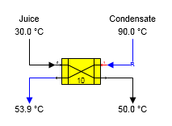
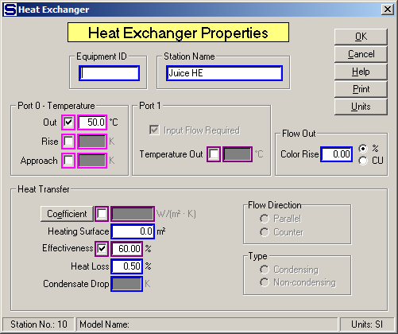
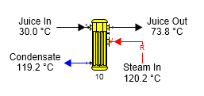
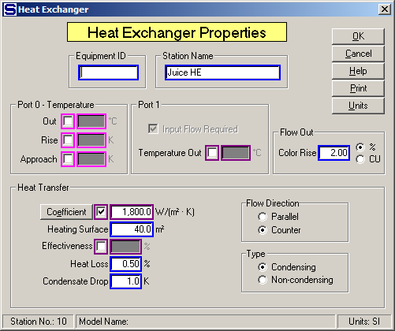

Condensate heating using a plate heat exchanger is shown in the figure below. The condensate (port 1) flow in is a required flow because a temperature was specified for the juice (port 0) flow out and the port 1 output flow temperature is not known and is calculated by Sugars.

The figure below shows the Heat Exchanger Properties window. Effectiveness is used to specify the heat exchange between the hot and cold flow streams. If the quantity of condensate is known, then leave the Port 0 Temperature Out unspecified (uncheck the Out box) and the condensate flow into the heat exchanger will not be required. The temperature of the juice out will then be calculated by Sugars.

Juice heating using steam is shown in the figure below. In this case, the heat exchanger is a condensing heat exchanger; hence, the temperature of the juice flow out is calculated by Sugars using the heat transfer coefficient and heating surface area.

The figure below shows the Heat Exchanger Properties window with entries for entries for the heat transfer coefficient and heating surface area. The Type of Heat Transfer is "Condensing" which allows Sugars to calculate the juice output flow temperature and the quantity of steam (steam flow in is required) into the heat exchanger based on the heating surface area and heat transfer coefficient.

Other examples of heat exchangers are shown in the Examples section where many of the example processes that are shown use heat exchangers.